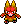

紅蓮火山口Cinnabar Crater
- 地區
- 關都
- 種類
- 洞窟與室內
野生寶可夢
白天
| 寶可夢 | 等級 | 機率 |
|---|---|---|
 鴨嘴火獸 | 40-48 | 37.2% |
 烈焰馬 烈焰馬 | 40-46 | 27.9% |
| 卡蒂狗 | 40-44 | 27.9% |
 風速狗 風速狗 | 44-48 | 6.98% 稀有 |
夜晚
 雙彈瓦斯
雙彈瓦斯 九尾
九尾傳說
 火焰鳥： 0.5% 每次野生寶可夢出現時，成為關都聯盟冠軍之後。
火焰鳥： 0.5% 每次野生寶可夢出現時，成為關都聯盟冠軍之後。
百分比是該地圖、該時段每次生成野生寶可夢時抽到這一隻的機率。天氣若符合寶可夢的屬性，出現率會提高。
| 寶可夢 | 等級 | 機率 |
|---|---|---|
 鴨嘴火獸 | 40-48 | 37.2% |
| 烈焰馬 | 40-46 | 27.9% |
| 卡蒂狗 | 40-44 | 27.9% |
| 風速狗 | 44-48 | 6.98% 稀有 |
火焰鳥： 0.5% 每次野生寶可夢出現時，成為關都聯盟冠軍之後。
百分比是該地圖、該時段每次生成野生寶可夢時抽到這一隻的機率。天氣若符合寶可夢的屬性，出現率會提高。